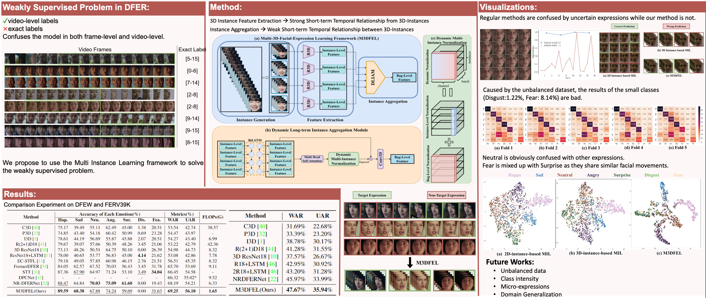
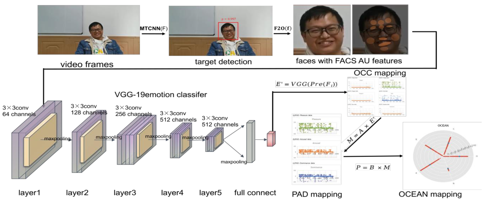
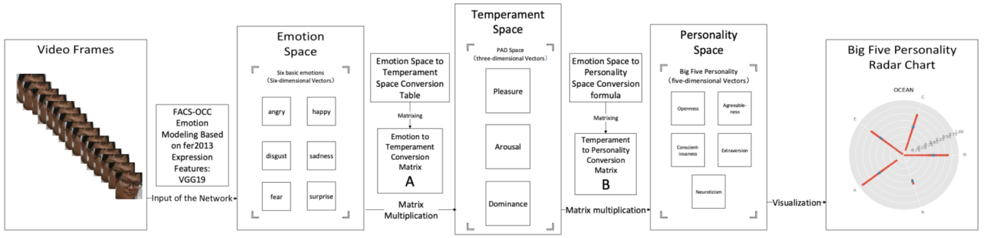
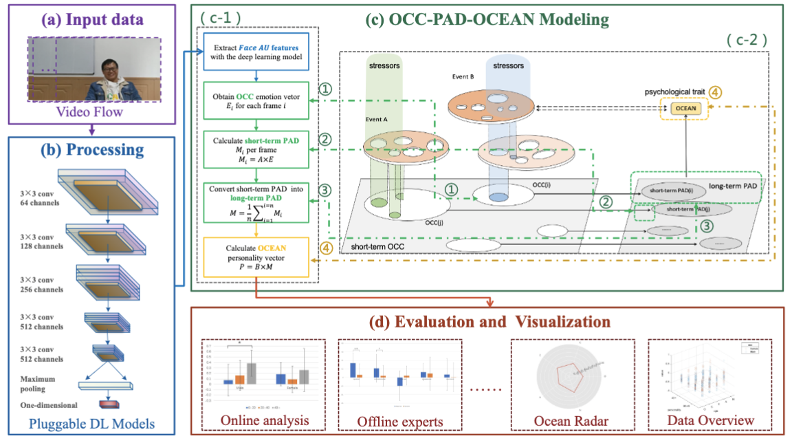

What we focus?Permalink
After preliminary exploration of qualitative emotion analysis through various human-centered techniques, including human facial expressions (micro-expressions, macro-expressions, and dynamic expressions), voice emotions, gesture emotions, and electroencephalography emotions, we have initiated two lines of research. We are focusing on two distinct yet interrelated areas of research. The first is the development of technology and theoretical mechanisms related to quantitative emotion analysis. The second is the research and development of technology for depression, anxiety, loneliness, and other applications related to computational psychiatry. For more detailed information about my work please see my publications.
Affective ComputingPermalink
Dynamic Facial Expression Recognition (DFER) is a rapidly developing field that focuses on recognizing facial expressions in video format. Previous research has con- sidered non-target frames as noisy frames, but we pro- pose that it should be treated as a weakly supervised prob- lem. We also identify the imbalance of short- and long- term temporal relationships in DFER. Therefore, we in- troduce the Multi-3D Dynamic Facial Expression Learn- ing (M3DFEL) framework, which utilizes Multi-Instance Learning (MIL) to handle inexact labels. M3DFEL gen- erates 3D-instances to model the strong short-term tem- poral relationship and utilizes 3DCNNs for feature extrac- tion. The Dynamic Long-term Instance Aggregation Mod- ule (DLIAM) is then utilized to learn the long-term temporal relationships and dynamically aggregate the instances. Our experiments on DFEW and FERV39K datasets show that M3DFEL outperforms existing state-of-the-art approaches with a vanilla R3D18 backbone.

Quantitative analysis of basic and advanced affective traitsPermalink
In recent years, it is a difficult issue to integrate the deep cross-fertilization and interpretable cognitive modeling methods from the basic theory of emotional psychology with deep learning and other algorithms. To address this problem, a cognitive model that integrates the VGG-facial action coding system (FACS)-OCC model based on fer2013 expression features and the OCC-pleasure-arousal-dominance (PAD)-openness, conscientiousness, extraversion, agreeableness, and neuroticism (OCEAN) fusion of the basic theory of emotional psychology, namely, a computational affection-based OCC-PAD-OCEAN federation cognitive modeling (OPO-FCM), is constructed. By constructing this model and performing formal proof algorithms, it is shown that the OPO-FCM can acquire expression features in video streams, complete the acquisition of expression features in videos by training a deep neural network, map expressions to the PAD emotion space through the established expression–basic emotions–emotion space mapping relationship, and finally complete the mapping of the average emotion over a period time. The information of personality space is obtained through it. Finally, the experimental simulation of the model is conducted, and the results show that the average accuracy of the valid tested personalities is 79.56%. This article takes the knowledge-driven approach of emotional psychology as a starting point and combines deep learning techniques to construct interpretable cognitive models, thus providing new ideas for future cross-innovation between computer technology and psychology theory.


Psychological mechanisms behind quantitative analysisPermalink
In the realm of Human-Centred Artificial Intelligence, there is a growing emphasis on psychologically interpretable AI. This study represents an interdisciplinary fusion of computer science and psychology, aiming to revolutionize personality trait analysis through deep learning techniques. Centered on the 'OCC-PAD-OCEAN' model, our research leverages the robust VGG19 deep learning architecture to analyze video data, aligning with the Big Five personality dimensions. This innovative method overcomes the inherent limitations of traditional questionnaires by providing a more accurate and computationally efficient alternative for psychological evaluations.Our empirical findings indicate a substantial correlation between our model's deep learning-based predictions and the results from conventional questionnaires, showcasing the model's capability to accurately reflect subtle individual differences within the Big Five traits. Interestingly, our analysis uncovers minimal gender-related variations, yet notable age-related distinctions in traits such as Agreeableness and Neuroticism.This research not only introduces a groundbreaking methodology for personality assessment but also sheds light on the transformative power of integrating deep learning into psychological analyses. This study provides theoretical and empirical support for the role of Big Five personality measures with psychological interpretability.

JoiningPermalink
We are transforming the existing paradigm of affective computing through quantitative affective computing with the help of AI technology. Join us if you are interested!